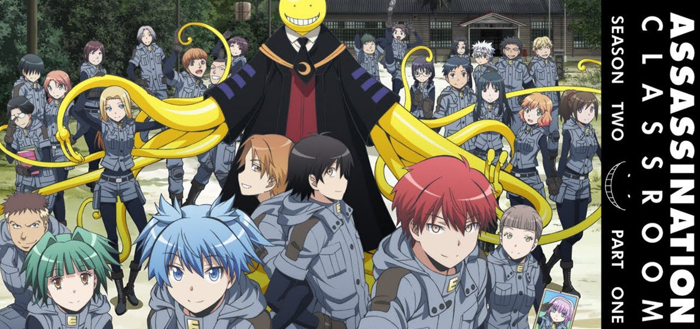

L'histoire se déroule au prestigieux collège Kunugigaoka. Koro-sensei est une étrange créature qui déclare avoir subitement détruit 70 % de la Lune. Il prévoit ensuite de détruire la Terre en mars prochain pour des raisons inconnues. Il se présente ensuite au gouvernement japonais et annonce vouloir devenir le professeur principal de la classe 3-E du collège Kunugigaoka pour pouvoir les former en tant qu'assassins et éliminer une cible bien particulière : lui-même, leur propre enseignant.
Les élèves de cette classe auront donc pour objectif d'assassiner leur professeur afin de sauver la Terre, la récompense étant de 10 milliards de yens. Cependant un problème se pose : Koro-sensei se déplace à Mach 20, possède des tentacules à fonctions infinies et, de plus, c'est un excellent professeur ! Le gouvernement va accepter pour pouvoir le garder à l’œil à condition que Koro-sensei ne fasse pas de mal aux élèves ; mais les élèves réussiront-ils leur mission avant la date impartie ?
Source 